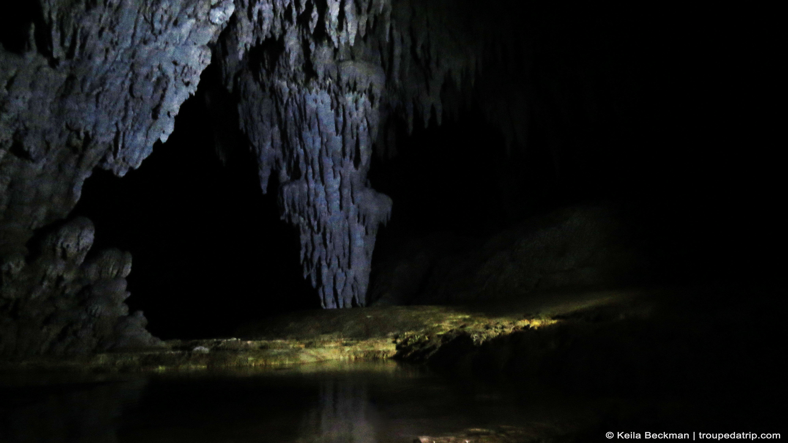
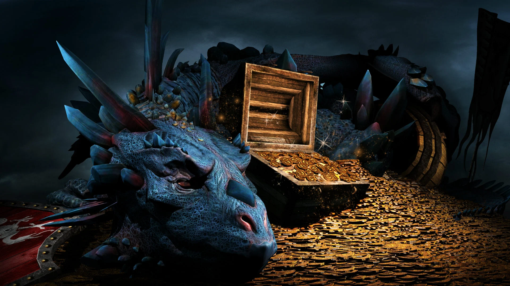
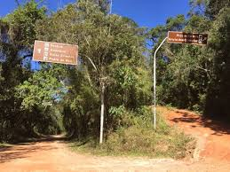

Você é um explorador em busca de um tesouro perdido na Floresta Encantada. Você entra na floresta e se depara com duas trilhas. Qual caminho você escolhe?
Você ouve um barulho estranho vindo de trás das árvores. O que você faz?
Você encontra uma ponte sobre um rio cristalino. O que você faz?
Você descobre uma criatura mágica! Ela parece amigável. O que você pergunta a ela?
Você continua e encontra uma caverna escura. O que faz?

Do outro lado, há uma árvore gigante com uma porta. O que você faz?
Enquanto bebe, percebe que algo brilha no fundo do rio. O que faz?
A criatura sorri e diz:"O tesouro está guardado por um dragão adormecido." Você decide:
A criatura aponta para um caminho brilhante e diz:"Siga esse caminho, mas cuidado com as armadilhas!" Você decide:
Dentro da caverna, encontra um mapa antigo. O que faz?
Você se depara com uma bifurcação na trilha. Qual caminho escolher?
A porta se abre e revela um salão mágico cheio de tesouros! O que faz?

Você encontra um grupo de elfos dançando ao redor de uma fogueira. O que faz?
Você puxa um colar mágico! Ao colocá-lo, uma voz ecoa: "Use com sabedoria!" O que faz?
Você avança pela floresta e encontra uma cabana abandonada. O que faz?